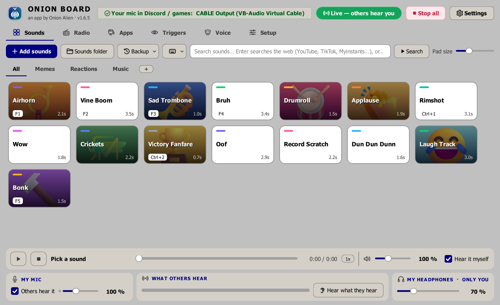
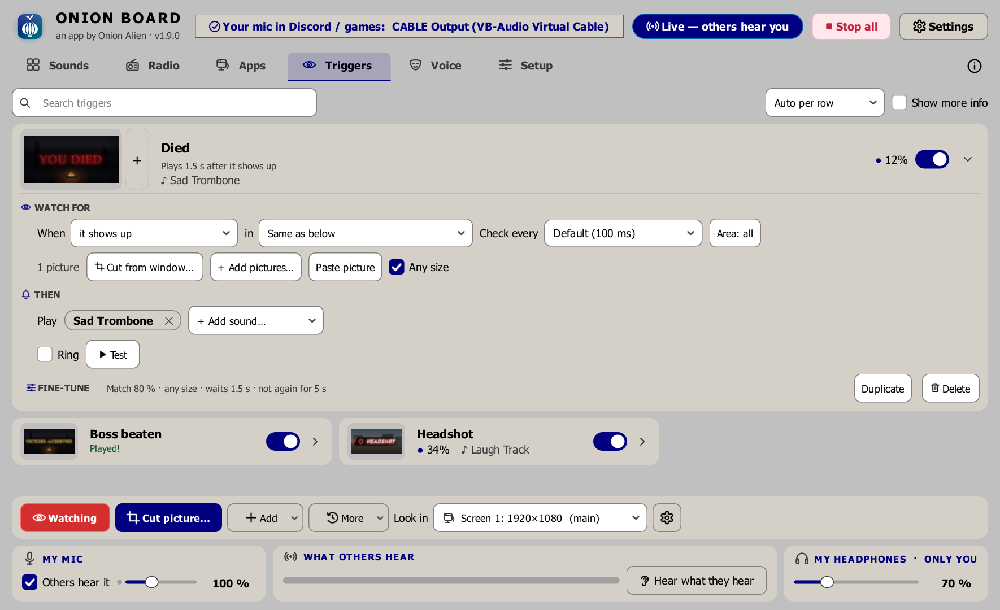
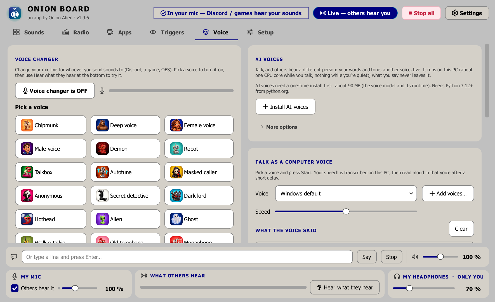
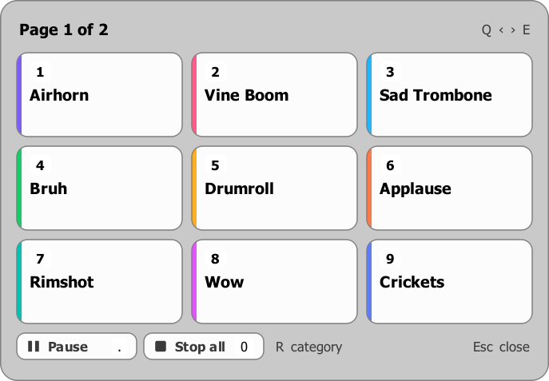

Onion Board
A free soundboard for Windows. Press a button or a hotkey, even in-game, and your friends in Discord or your game hear the sound through your mic.
⬇ Download for WindowsFree · Windows 10 and 11 · one installer, no account, no ads, no tracking
VirusTotal scan of 1.6.4 · 40 of 40 scanners clean
Latest version 1.6.4 · what's new

What it does
Sounds into Discord and games
Your sounds go out through your mic (via a free virtual cable the installer sets up). Your voice goes along with them, or send only the sounds.
Stream output for OBSNEW
Streaming? Your sounds, screen triggers and voice go clean (no voice chat squashing, still stereo) to a device of their own, so they're their own audio track in OBS with their own volume.
A hotkey for everythingNEW
Switch category in-game and one key plays a random sound from it. Give each category its own set of keys, replay the last sound, turn sounds up or down, your mic or voice changer on or off, or every hotkey off while you type.
Queue, wait and cooldownNEW
Queue a sound to play after the one playing, or play a whole category in order or shuffled. Make a sound wait for the punchline, stop friends spamming it with a cooldown, or send it to everyone but you.
Instant replay
Someone says something funny in Discord? Press one key and the last 30 seconds you heard become a pad, ready to play back at them. Kept only in memory until you press it.
MIDI pads
Hit a pad on an Akai LPD8, a Launchpad or any USB MIDI controller to play a sound, no extra software. Hold-to-play sounds stop when you let go; macro keypads work too.
Screen triggers
A sound the moment something shows up in your game, like "YOU DIED", a rare spawn or a queue popping. It watches the game's own window, even behind other windows, and can ring until you stop it. One click adds it: it's the free Onion Watch add-on, also its own app.
Hotkeys and in-game overlay
Global hotkeys work while you play. Press a key for a small panel of pads over your game, then a number to play one.
Voice changer and text-to-speech
Robot, radio, echo, pitch and more on your live voice, or type and a computer voice says it, in Windows' voices or your own (Kokoro, AllTalk, Piper and other local voices). Live voice-to-speech and translation too.
Effects on any sound
Trim, speed, pitch, bass boost, reverse, reverb. One-click presets like Ear rape, Nightcore, Slowed + reverb.
Add sounds from anywhere
Drag in files, or search YouTube and SoundCloud right in the app and add the audio as a pad.
Internet radio and app audio
Radio from around the world on a 3D globe, or send one program's sound (music, a video) to your friends.
Sounds as good on their end
Sent in smart mono with room for the call's compression, and a one-click check that tells you which Discord setting is chopping your sounds up.
Stream Deck and scripts
Optional: let a Stream Deck, Touch Portal, AutoHotkey or a script on your PC play your sounds, guarded by a key only you have.
Make it yours
31 themes (a few of them memes), pictures and colours on your pads, categories, backups you can take to a new PC, and sound packs to share with friends.
Screenshots




Get started
- Download
OnionBoardSetup.exeand run it. - A short guide asks which mic and headphones you use and sets everything up.
- In Discord (or your game), pick CABLE Output as your microphone, and set Discord's Input Profile to Studio so it doesn't treat your sounds as noise.
Windows or your browser may warn you about the download. That's normal for a free app from a small developer: the installer isn't "code-signed", which costs hundreds a year. Click More info → Run anyway (or ⋯ → Keep in Edge / Chrome). The full source code is on GitHub if you'd like to check it.